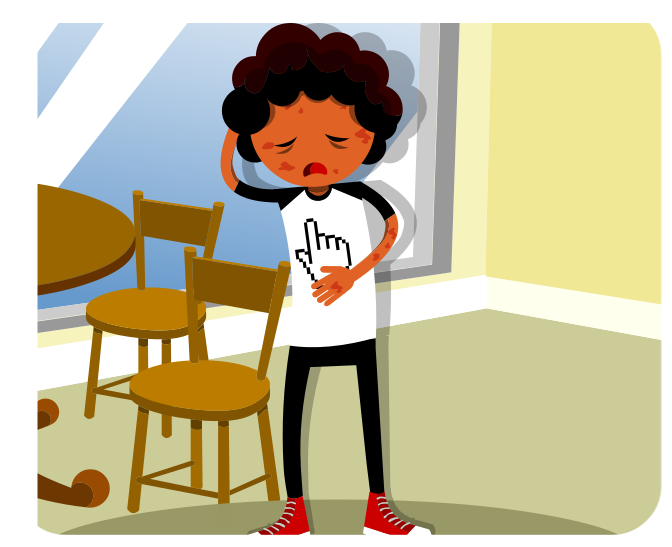
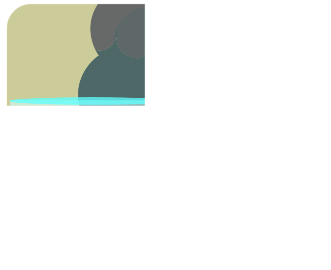
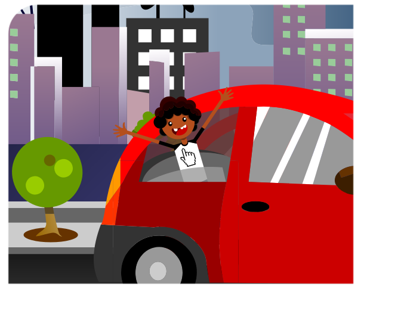
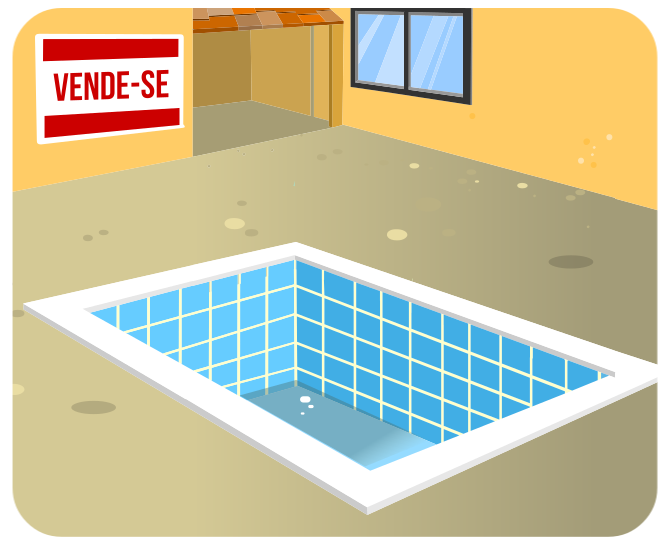

<!-- Desenvolvedor: Rodolfo Araújo-->
<!doctype html>
<html lang="pt-br">
  <head>
    <title>Todos contra o Aedes aegypti</title>
    <meta charset="utf-8">
    <script src="../wilib/js/lib/require.js"></script>
    <script src="../wilib/js/app.js"></script>
    <link rel="stylesheet" href="../wilib/css/font-awesome.css">
    <link rel="stylesheet" href="../wilib/css/estilo.css">

    <script>

    require(['../wilib/js/lib/alternativa_botao'], function (edi) {

      edi.setConfig({
        titulo: 'Leia com atenção cada situação a <br> seguir e selecione a atitude correta a ser tomada.',
        sexo: "F",
        tempoFinal: 5,
        qtdTelas: 4
      });

  if (edi.telaAtual == 1) {
    var texto = 'Você está doente, com suspeita <br> de dengue. O que você deve fazer?';

    var btns = [
    {texto: 'Ficar totalmente isolado para não <br> transmitir a doença a outras pessoas. ', dataCorreta: false},
    {texto: 'Ir ao hospital ou posto de saúde <br> para buscar orientação médica, ficar de <br> repouso e beber bastante líquido.', dataCorreta: true}
    ];
  }

  if (edi.telaAtual == 2) {
    var texto = 'Você acaba de ver um vaso com água <br> em sua casa com várias larvas do  <br>  mosquito. O que você deve fazer?';

    var btns = [
    {texto: 'Jogar as larvas na terra seca do jardim <br> ou chamar algum adulto para colocar água <br> sanitária na quantidade correta para  <br>  matar as larvas e depois lavar o vaso.', dataCorreta: true},
    {texto: 'Jogar um pouco de terra do jardim <br> no vaso com água ou colocar o vaso <br> com as  larvas em um local sombreado.', dataCorreta: false}
    ];
  }

  if (edi.telaAtual == 3) {
    var texto = 'Você e sua família vão viajar nas férias  por uma semana. Antes de partir, o que vocês devem fazer?';

    var btns = [
    {texto: 'Verificar toda a casa retirando os <br>  objetos da área externa que podem  <br>  acumular água, deixar os ralos e os  <br>  vasos sanitários fechados.', dataCorreta: true},
    {texto: 'Fechar bem as janelas para evitar que os  <br> mosquitos entrem na casa e passar <br>  repelente nos móveis da casa.', dataCorreta: false}
    ];
  }

  if (edi.telaAtual == 4) {
    var texto = 'A casa vizinha à sua está fechada à venda há meses, nela existe uma piscina vazia e descoberta. O que você deve fazer?';

    var btns = [
    {texto: 'Pular o muro da casa do vizinho e cobrir  <br>  a piscina com a ajuda de um colega.', dataCorreta: false},
    {texto: 'Pedir para os seus pais entrarem <br>  em contato com o responsável <br>   da casa para fazer uma limpeza e <br> cobrir a piscina adequadamente.', dataCorreta: true}
    ];
  }

    var imagem = [
    '</img>',
    '</img>',
    '</img>',
    '</img>'
    ];


  var config = {
    randomico: true,
    width: 340,
    height: 80,
    left: 400,
    top: 150,
    tamanhoTexto: 16,
    fontSize: 12,
    colunas: 1,
    margin: '0 0 10px 0',
    padding: 5,
    display: 'block',
    randomico: false,
    btnBranco: true,
    animacao: true,
    fontWeight: 'normal',

  };

  function callbackFinal(a) {
    if (edi.telaAtual == 4) {
      if (a) {
        barraMsg('Muito bem! Caso não seja possível localizar o responsável da casa, peça para entrarem em contato com a Ouvidoria de Saúde de sua cidade.',
          {height: 90, top: 77});
      }
    }
  }

  edi.alternativa_botao(btns, null, callbackFinal , config);

  $('.texto').find('p').html(texto);
  $('.img').find('p').html(imagem[edi.telaAtual-1]);
  $('#ico').iconeInterrogacaoAzul(true);

});
window.onload = function() {
  parent = {
    bloqueio: function() {},
    seguir: function() {
      document.location = document.URL.replace('todos_13', 'todos_14').split('?')[0];
    }
  }
};
    </script>

    <style>

       .texto {
          width: 375px;
          height: 100px;
          padding: 0 20px;
          position: absolute;
          left: 460px;
          top: 80px;
          color: #666;
        }

        .texto p {
          margin: 10px 120px 0 0;
          font-size: 13px;
          text-align: justify;
          line-height: 1.3;
        }

        .btn-sem-estilo {
          box-shadow: 0 0 0 0;
        }


        #ico {
          position: absolute;
          left: 404px;
          top: 80px;
        }

        #pergunta {
          position: absolute;
          width: 250px;
          height: 25px;
          left: 488px;
          top: 120px;
          color: #666;
        }

        .img {
          position: absolute;
          left: 5px;
          top: 70px;
        }
      

    </style>
  </head>

  <body>
    <span id="ico"></span>

    <div class="texto">
      <p></p>
    </div>

    <div class="img">     
      <p></p>
    </div>

  </body>
</html>